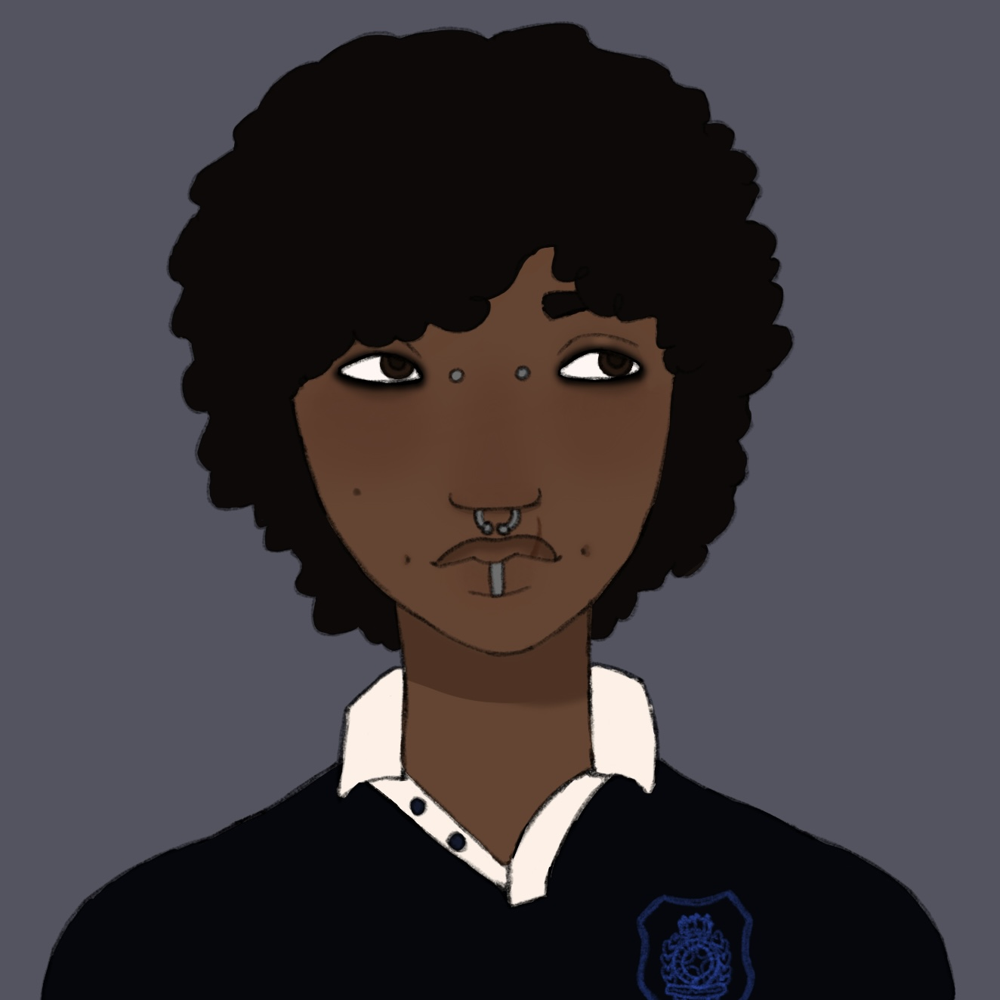

Cameron Malik Moore is a fictional character from Miles Charles' fictional horror story titled St. Adelaide. He is the story's protagonist and the first character introduced in the story. He's a 22 year old African American man who has lived in St. Adelaide his entire life. He works a dead-end job at the beginning of the story, stuck in a loop of unfulfilling labor. This cycle breaks once he meets Casey, as he decides from then on that he'll do anything to help Casey escape.
He is a resident of St. Adelaide who was born outside of the town’s curse, which means he has a deep understanding that the town itself is not normal. He learned that it was best to assimilate to the town after witnessing firsthand the experience of his parents, who failed to escape and risked their lives only to fail. He’s also witnessed outsiders come into town, but he never saw them leave, and was afraid that if he outed himself as having been born outside that he could be in danger, too. He grew up relatively adjusted to the town and its people, who never suspected him as anything but one of their own. But he knew that he wanted more out of life. He wanted to experience higher education and follow his own passions, rather than feeling as though all he can do is work meaningless jobs just to hold himself up. Believing he could never achieve this, he continues on in an unfulfilling cycle where he’s only surviving and not living.